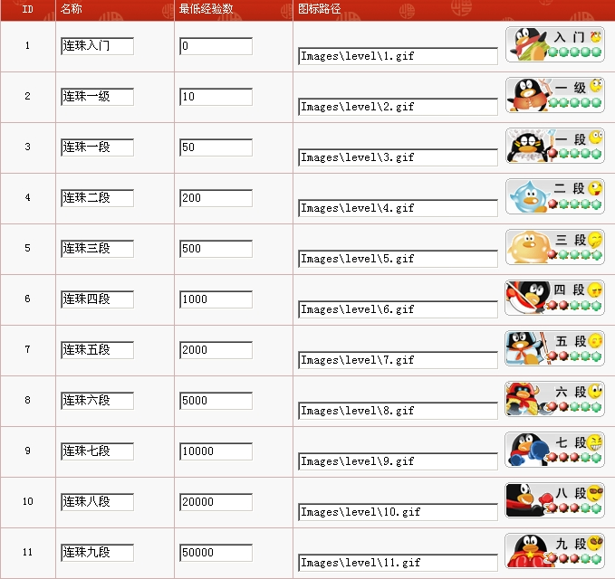

用户等级名称征集，威望伺候
#1 用户等级名称征集，威望伺候 作者：有志青年 发表时间：2011-4-10 20:45:24
本站一开始的时候有搞过一个等级名称，如下图所示：

但一直没有使用，主要觉得这个等级名称太“实”了，容易产生歧义。
现征集用户等级名称，奖励威望
要求：
1、设置一组，不少于7个等级，每个等级间在名称上有关联
2、等级名称和本站的主题贴切，不要搞个军衔系列哟
3、同时给出配对显示的参考图片或文字描述
4、如能给出等级与之相关的经验、威望等关联关系，再次奖励
［ 被感动的人 于 2011-4-11 22:36:38 时花20金币送鲜花一朵］
已完工，并设置贵宾进入板块，威望达到20后直接进入，无需手工修改会员等级了。
［此帖子已被 有志青年 在 2011-4-29 16:53:52 编辑过］
#2 Re:用户等级名称征集，威望伺候 作者：三国老凯 发表时间：2011-4-10 21:31:15
等级 威望
1 初出茅庐 0-3
2 浪迹江湖 4-7
3 小有名气 7-10
4 名噪一时 10-15
5 闻名遐迩 15-25
6 一代宗师 25-50
7 归隐山林 50-100
8 名人堂 100以上
［此帖子已被 三国老凯 在 2011-4-10 21:33:41 编辑过］
［ 无尽 于 2011-4-10 22:22:27 时花20金币送鲜花一朵］
［ 有志青年 于 2011-4-11 8:29:32 时奖励此帖[金币加 100 威望加1］
［ 有志青年 于 2011-4-11 8:29:43 时奖励此帖[金币加 100 威望加1］
［ 被感动的人 于 2011-4-11 22:36:48 时花20金币送鲜花一朵］
#3 Re:用户等级名称征集，威望伺候 作者：裁决殿雪月 发表时间：2011-4-10 21:52:36
等级 威望
1 初学弟子 0-3
2 中级弟子 4-7
3 初入江湖 7-10
4 名动一方 11-15
5 江湖大侠 16-50
7 武林盟主 51-80
8 一代宗师 81-120
9 独孤求败 121-160
10 天外飞仙 160以上
［此帖子已被 裁决殿雪月 在 2011-4-10 21:54:22 编辑过］
［ 无尽 于 2011-4-10 22:22:12 时花20金币送鲜花一朵］
［ 有志青年 于 2011-4-11 8:29:49 时奖励此帖[金币加 100 威望加1］
［ 有志青年 于 2011-4-11 8:30:01 时奖励此帖[金币加 100 威望加1］
［ 被感动的人 于 2011-4-11 22:36:56 时花20金币送鲜花一朵］
#4 Re:用户等级名称征集，威望伺候 作者：有尽 发表时间：2011-4-10 22:20:41
一年级
。。。
七年级
［ 极地剑客 于 2011-4-10 23:44:40 时花20金币送鲜花一朵］
［ 被感动的人 于 2011-4-11 22:37:08 时花20金币送鲜花一朵］
#5 Re:用户等级名称征集，威望伺候 作者：无尽 发表时间：2011-4-10 22:22:56
楼上的鸡蛋就记着了
#6 Re:用户等级名称征集，威望伺候 作者：掌棋宣传员 发表时间：2011-4-11 10:53:33
等级 威望
1.练气期 0-3
2.筑基期 4-7
3.凝脉期 7-10
4.金丹期 11-15
5.元婴期 16-50
6.化神期 51-80
7.炼虚期 81-120
8.合体期 121-160
9.大乘期 160-250
10.渡劫期 250!!!
11....飞升仙界，与天地同寿 250以上
［ 有志青年 于 2011-4-11 11:19:23 时奖励此帖[金币加 100 威望加1］
［ 有志青年 于 2011-4-11 11:19:25 时奖励此帖[金币加 100 威望加1］
#7 Re:用户等级名称征集，威望伺候 作者：屏蔽 发表时间：2011-4-11 10:59:58
有志先说一下“经验值”到底是怎么计算的
然后确定一下到底用经验值还是威望来做评价标准……
#8 Re:用户等级名称征集，威望伺候 作者：三国老凯 发表时间：2011-4-11 11:02:43
等级 威望
1 气旋 0-3
2 流星 4-7
3 卫星 7-12
4 行星 13-20
5 恒星 21-30
6 中子星 31-50
7 星座 51-80
8 星系 81-120
9 星域 121-200
10宇宙 201以上
［此帖子已被 三国老凯 在 2011-4-11 11:25:02 编辑过］
［ 被感动的人 于 2011-4-11 22:37:21 时花20金币送鲜花一朵］
#9 Re:Re:用户等级名称征集，威望伺候 作者：三国老凯 发表时间：2011-4-11 11:15:59
引用：
原文由 掌棋宣传员 发表于 2011-4-11 10:53:33 :等级 威望
1.练气期 0-3
2.筑基期 4-7
3.凝脉期 7-10
4.金丹期 11-15
5.元婴期 16-50
6.化神期 51-80
7.炼虚期 81-120
8.合体期 121-160
9.大乘期 160-250
10.渡劫期 250!!!
11....飞升仙界，与天地同寿 250以上
12仙人 250-500
13金仙 500-1000
14大罗金仙 1000-2000
15仙君 2000-5000
16仙帝 5000-10000
17一教之主 10000-20000
18仙劫飞升期 20000-50000
19伪神 50000-100000
20神人 100000-200000
21天神 200000-500000
22古神 500000-1000000
23神王 1000000-2000000
24太始 元初 祖神 2000000-
25？？欢迎接龙
#10 Re:Re:用户等级名称征集，威望伺候 作者：有志青年 发表时间：2011-4-11 11:18:28
引用：
原文由 屏蔽 发表于 2011-4-11 10:59:58 :有志先说一下“经验值”到底是怎么计算的
然后确定一下到底用经验值还是威望来做评价标准……
经验原本等于金币，但金币会消耗，有转账、奖励、惩罚，经验不会。
他们都是通过发贴、精华来提升的。
#11 Re:用户等级名称征集，威望伺候 作者：潇洒 发表时间：2011-4-11 11:49:18
等级 威望
1 一袋弟子 0-3
2 二袋弟子 4-7
3 三袋弟子 7-10
4 四袋弟子 11-15
5 五袋弟子 16-30
6 六袋弟子 31-60
7 七袋弟子 61-100
8 八袋弟子 101-150
9 九袋弟子 151-250
10 长老 251以上
［此帖子已被 潇洒 在 2011-4-11 11:58:04 编辑过］
［ 被感动的人 于 2011-4-11 22:37:43 时花20金币送鲜花一朵］
#12 Re:用户等级名称征集，威望伺候 作者：潇洒 发表时间：2011-4-11 11:56:42
等级 威望
1.预科 0-3
2.见习 4-7
3.初级 7-10
4.中级 11-15
5.高级 16-50
6.特级 51-80
7.超级 81-120
8.元老 121-160
9.长老 160-250
10.法老 250!!!
［ 被感动的人 于 2011-4-11 22:37:52 时花20金币送鲜花一朵］
［ gerbo 于 2011-4-12 17:40:03 时花20金币送鲜花一朵］
#13 Re:用户等级名称征集，威望伺候 作者：潇洒 发表时间：2011-4-11 12:00:59
等级 威望
1 初学乍练 0-3
2 登堂入室 4-7
3 圆转纯熟 7-10
4 初窥堂奥 11-15
5 略有小成 16-30
6 渐入佳境 31-60
7 炉火纯青 61-100
8 自成一派 101-150
9 已臻大成 151-210
10 功行圆满 211-280
11 登峰造极 281-360
12 出神入化 361-450
13 神功绝世 450以上
［此帖子已被 潇洒 在 2011-4-11 12:10:47 编辑过］
［ 被感动的人 于 2011-4-11 22:38:28 时花20金币送鲜花一朵］
［ 有志青年 于 2011-4-12 8:20:31 时奖励此帖[金币加 100 威望加1］
［ 有志青年 于 2011-4-12 8:20:50 时奖励此帖[金币加 100 威望加1］
#14 Re:用户等级名称征集，威望伺候 作者：潇洒 发表时间：2011-4-11 12:02:04
浪迹天涯草塘结庐
池畔闲人
五湖信步
轻舟飘渺
长空啸傲
江东帆影
碧海潮生
九州雷动
［ 被感动的人 于 2011-4-11 22:38:41 时花20金币送鲜花一朵］
#15 Re:用户等级名称征集，威望伺候 作者：潇洒 发表时间：2011-4-11 12:04:38
等级 威望
1 武林新丁 0-3
2 江湖小虾 4-7
3 后起之秀 7-10
4 武林高手 11-15
5 风尘奇侠 16-30
6 无双隐士 31-60
7 世外高人 61-100
8 江湖侠隐 101-150
9 无敌圣者 151-210
10 三界贤君 210以上
［此帖子已被 潇洒 在 2011-4-11 12:12:56 编辑过］
［ 被感动的人 于 2011-4-11 22:38:51 时花20金币送鲜花一朵］
#16 Re:用户等级名称征集，威望伺候 作者：逆刃 发表时间：2011-4-11 13:17:54
以下均以威望计算。另外可以考虑加上其它参数的组合计算。
底级：五林败类，＜0 （为来论坛捣蛋破坏的，包括刷屏灌水的）
一级：五林新人，0～2 （为刚刚注册论坛的，才申请的威望）
二级：五子初学，3～6 （以下为学习五子棋的三个阶段，分为初学，入门，和进阶，初学即是初学者）
三级：五子入门，7～12（已经入门）
四级：五子进阶，13～19（往更高水平学习进阶）
五级：五林高手，20～29（进阶完即成为高手，以20威望为槛，也是本站贵宾会员的标准）
六级：五林大师，30～49（比高手更高手，成为大师）
七级：五林名人，50～79（名人不需要解释）
八级：风云人物，80～129（名人中的名人，风云人物）
九级：一代宗师，130～199（宗师级人物，已经超越普通大师）
十级：五子棋魂，200以上 （很少有人能达到，达到者基本上属于棋魂级人物）
以上内容均为原创，根据本站实际情况分析得出。如有雷同，纯属捏造！
支持的朋友顶起来哇～～！
［此帖子已被 逆刃 在 2011-4-11 13:39:21 编辑过］
［ 被感动的人 于 2011-4-11 22:39:04 时花20金币送鲜花一朵］
［ 有志青年 于 2011-4-12 8:20:57 时奖励此帖[金币加 100 威望加1］
［ 有志青年 于 2011-4-12 8:21:01 时奖励此帖[金币加 100 威望加1］
#17 Re:用户等级名称征集，威望伺候 作者：我是裁判 发表时间：2011-4-11 20:00:52
一级：幼儿园毕业
二级：小学毕业
三级：初中毕业
四级：高中毕业
五级：大学毕业（学士学位）
六级：硕士生毕业（硕士学位）
七级：博士生毕业（博士学位）
八级：硕士研究生导师
九级：博士生导师
十级：院士
或者：
一级：实习生
二级：技术员
三级：助理工程师
四级：工程师
五级：高级工程师
六级：教授
七级：硕导
八级：博导
九级：院士
［ 被感动的人 于 2011-4-11 22:36:27 时花20金币送鲜花一朵］
［ 有志青年 于 2011-4-12 8:21:06 时奖励此帖[金币加 100 威望加1］
#18 Re:Re:用户等级名称征集，威望伺候 作者：被感动的人 发表时间：None
刚看了本围棋题材的小说，恰好看到围棋九品，顺便借来诳俩威望吧
等级名称 相应威望
三 级 0
二 级 1——2
一 级 3——4
一守拙 5——10
二若愚 11——15
by:web版  IP：
已记录
IP：
已记录
#19 Re:用户等级名称征集，威望伺候 作者：被感动的人 发表时间：2011-4-11 22:41:02
对楼上各位表示赞！
尤其9的渡劫期真好啊~不知道第一个渡劫的是哪位
送花原来也是力气活儿~还是收花舒服啊
［ 裁决殿雪月 于 2011-4-11 22:41:39 时花20金币送鲜花一朵］
#20 Re:用户等级名称征集，威望伺候 作者：屏蔽 发表时间：2011-4-11 22:50:42
18楼你太雷了，完全排反了……［ 被感动的人 于 2011-4-11 22:51:04 时花20金币送鲜花一朵］
#21 Re:用户等级名称征集，威望伺候 作者：被感动的人 发表时间：2011-4-11 22:54:00
不排反了怎么找热闹呢？ 另外借问一下，中国棋院真的有以九品命名的围棋棋室么？还是小说杜撰的？
另外借问一下，中国棋院真的有以九品命名的围棋棋室么？还是小说杜撰的？
#31 Re:用户等级名称征集，威望伺候 作者：潇洒 发表时间：2011-4-15 0:05:42
啥时候实行啊？
#32 Re:Re:用户等级名称征集，威望伺候 作者：蓝天蓝 发表时间：2011-4-15 10:50:23
引用：觉得这个等级名称好
原文由 逆刃 发表于 2011-4-11 13:17:54 :以下均以威望计算。另外可以考虑加上其它参数的组合计算。
底级：五林败类，＜0 （为来论坛捣蛋破坏的，包括刷屏灌水的）
一级：五林新人，0～2 （为刚刚注册论坛的，才申请的威望）
二级：五子初学，3～6 （以下为学习五子棋的三个阶段，分为初学，入门，和进阶，初学即是初学者）
三级：五子入门，7～12（已经入门）
四级：五子进阶，13～19（往更高水平学习进阶）
五级：五林高手，20～29（进阶完即成为高手，以20威望为槛，也是本站贵宾会员的标准）
六级：五林大师，30～49（比高手更高手，成为大师）
七级：五林名人，50～79（名人不需要解释）
八级：风云人物，80～129（名人中的名人，风云人物）
九级：一代宗师，130～199（宗师级人物，已经超越普通大师）
十级：五子棋魂，200以上 （很少有人能达到，达到者基本上属于棋魂级人物）
以上内容均为原创，根据本站实际情况分析得出。如有雷同，纯属捏造！
支持的朋友顶起来哇～～！
［此帖子已被 逆刃 在 2011-4-11 13:39:21 编辑过］
［ 被感动的人 于 2011-4-11 22:39:04 时花20金币送鲜花一朵］
［ 有志青年 于 2011-4-12 8:20:57 时奖励此帖[金币加 100 威望加1］
［ 有志青年 于 2011-4-12 8:21:01 时奖励此帖[金币加 100 威望加1］
#33 Re:用户等级名称征集，威望伺候 作者：棋道无尽 发表时间：2011-4-15 12:41:20
底级：一无所知，＜0
一级：初识五子，0～2
二级：纸笔对决，3～6
三级：笑傲班级，7～12
四级：网络寻敌，13～19
五级：无禁达人，20～29
六级：升阶习禁，30～49
七级：奋发记谱，50～79
八级：智斗软件，80～129
九级：五湖流芳，130～199
十级：功成名就，200以上
#34 Re:用户等级名称征集，威望伺候 作者：无尽 发表时间：2011-4-15 13:55:13
支持18楼九品那个，有文化厚重感
［ 被感动的人 于 2011-4-15 17:48:24 时花20金币送鲜花一朵］
#35 Re:用户等级名称征集，威望伺候 作者：潇洒 发表时间：2011-4-15 14:16:47
18楼的不错..我的也不错..［ 被感动的人 于 2011-4-15 17:48:37 时花20金币送鲜花一朵］
#36 Re:Re:用户等级名称征集，威望伺候 作者：松痕 发表时间：2011-4-15 16:15:18
引用：你是学地理的？
原文由 三国老凯 发表于 2011-4-11 11:02:43 :等级 威望
1 气旋 0-3
2 流星 4-7
3 卫星 7-12
4 行星 13-20
5 恒星 21-30
6 中子星 31-50
7 星座 51-80
8 星系 81-120
9 星域 121-200
10宇宙 201以上
［此帖子已被 三国老凯 在 2011-4-11 11:25:02 编辑过］
［ 被感动的人 于 2011-4-11 22:37:21 时花20金币送鲜花一朵］
#37 Re:Re:用户等级名称征集，威望伺候 作者：松痕 发表时间：2011-4-15 16:16:21
引用：你是玩再战黄沙的？
原文由 潇洒 发表于 2011-4-11 11:49:18 :等级 威望
1 一袋弟子 0-3
2 二袋弟子 4-7
3 三袋弟子 7-10
4 四袋弟子 11-15
5 五袋弟子 16-30
6 六袋弟子 31-60
7 七袋弟子 61-100
8 八袋弟子 101-150
9 九袋弟子 151-250
10 长老 251以上
［此帖子已被 潇洒 在 2011-4-11 11:58:04 编辑过］
［ 被感动的人 于 2011-4-11 22:37:43 时花20金币送鲜花一朵］
#38 Re:用户等级名称征集，威望伺候 作者：消逝的雨 发表时间：2011-4-15 22:26:32
新入棋途
小具棋力
初领棋道
渐入棋境
棋心稳固
棋高一筹
一朝悟棋
妙领棋境
棋由心生
心中无棋
［ 三国老凯 于 2011-4-16 2:30:46 时花20金币送鲜花一朵］
［ 有志青年 于 2011-4-16 10:19:48 时奖励此帖[金币加 100 威望加1］
#39 Re:用户等级名称征集，威望伺候 作者：有尽 发表时间：2011-4-16 17:38:16
等级 威望1 ****＜0
2 ****0-5
3 ****6-10
4 ****11-20
5 ****21-50
6 ****51-80
7 ****81-140
8 ****141-200
9 *****＞200
#40 Re:用户等级名称征集，威望伺候 作者：怪 发表时间：2011-4-16 21:49:10
1 菜籽＜0
2 菜芽0-5
3 菜叶6-10
4 菜虫11-20
5 菜鸟21-50
6 高手51-80
7 不败81-140
8 横扫141-200
9 无敌200-250
10 寂寞250-1000
11 数据溢出>1000
#41 Re:用户等级名称征集，威望伺候 作者：怪 发表时间：2011-4-16 21:55:17
咦，才发现注册有两年了。。［ 逆刃 于 2011-4-17 14:49:40 时花20金币送鲜花一朵］
#42 Re:用户等级名称征集，威望伺候 作者：与郎共五 发表时间：2011-4-17 12:54:17
西游记：喽喽。赞风。先锋。寨主。大王。大圣。佛祖。
水浒传：托塔天王。神机军师。玉麒麟。入云龙。锦毛狮。跳涧虎。扑天雕。
爱五网：小鱼。（专食小虾。）
菜鸟。（超级的，还是药师呢。）
小猪。（小弟小姐好多呀)
骆驼。（据说胆子不大）
大鲸。（算不算鱼呢？）
刀刃。（刀有大小，刃有正反。一不小心，威望伺候。）
厨师。（年轻志大。网罗天下英才，尽来爱五餐厅）
如有兴趣，自行入列。
#43 Re:用户等级名称征集，威望伺候 作者：山东星月皎璨 发表时间：2011-5-19 16:51:57
应该统一商定#44 Re:用户等级名称征集，威望伺候 作者：夏添 发表时间：2011-5-26 21:31:50
必败（-3级）
二打必败（-2级）
二打白优（-1级）
平衡（新用户，0级）
一打黑优（1级）
一打必胜（2级）
二打黑优（3级）
二打必胜（4级）
三打黑优（5级）
三打必胜（6级）
四打黑优（7级）
四打必胜（8级）
五打黑优（9级）
五打必胜（10级，顶级）
［ 有志青年 于 2011-5-26 22:37:11 时奖励此帖[金币加 100 威望加1］
［ 掌棋宣传员 于 2011-5-28 13:21:38 时花20金币送鲜花一朵］